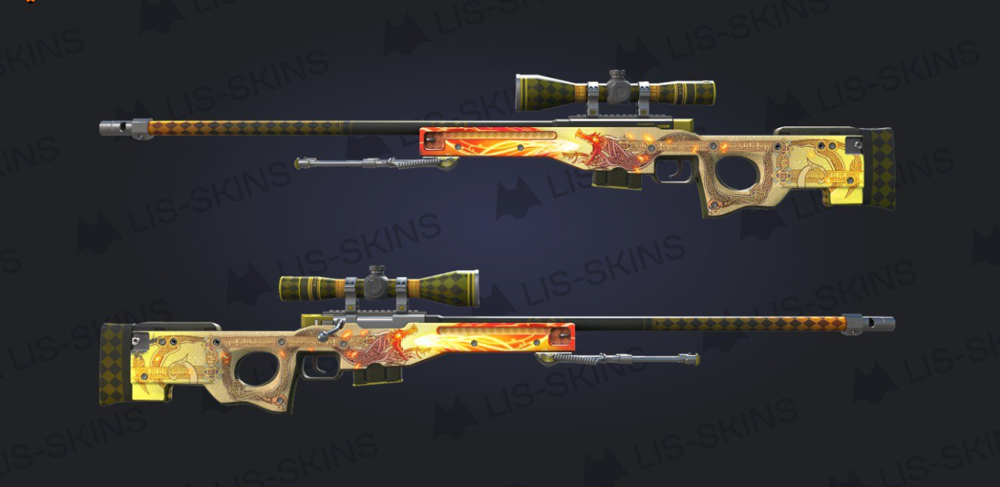

Visibility Methods (Task 2)
Этот параграф будет скрываться и показываться кнопками ниже.
Fade Methods (Task 3)

Slide Methods (Task 4)
Коллапсируемая панель. Использует .slideToggle(), .slideUp(), .slideDown().
Этот параграф будет скрываться и показываться кнопками ниже.

Коллапсируемая панель. Использует .slideToggle(), .slideUp(), .slideDown().